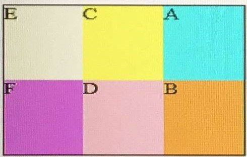

Question 247
HOTSPOT
You need to create a page that displays the content as shown in the exhibit.

You write the following markup.
<style>
#main {
width: 180px;
height: 150px;
border: 1px solid black;
display: flex;
Target 1: Target 2 column;
}
#main div {
flex-basis: 75px;
}
</style>
<div id="main">
<div style="background-color: aqua;">A</div>
<div style="background-color: orange;">B</div>
<div style="background-color:yellow;">C</div>
<div style="background-color: pink;">D</div>
<div style="background-color: beige;">E</div>
<div style="background-color: violet;">F</div>
</div>
How should you complete the markup?
To answer, select the appropriate code element for each target in the answer area.
Target 1 Target 2
-------- --------
flex-direction : column reverse
flex-flow : row
flex-order : wrap
: wrap-reverse
NOTE: Each correct selection is worth one point.
*************************
Correct Answer:
Target 1: flex-flow
Target 2: wrap-reverse
*************************
References:
https://www.w3schools.com/cssref/tryit.asp?filename=trycss3_flex-direction